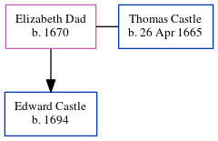

Elizabeth Castle (née Dad) 1670 -
[ Home ] | [ Calendar ] | [ Surnames Index ] | [ Errors ] | [ Family History ]Elizabeth Dad, the 7 times great-grandmother of Nigel Horne, was born in 16701 and married Thomas Castle (with whom she had 1 child, Edward) in Capel-Le-Ferne, Kent, England on 19 May 16912 (Capel Le Ferne, Kent, England).
She died in England.
Children
- Edward was born in 1694
Citations
- Public Member Trees Online publication - Provo, UT, USA: The Generations Network, Inc., 2006.Original data - Family trees submitted by Ancestry members.Original data: Family trees submitted by Ancestry members.
- England Marriages 1538-1973 - Findmypast
Family Tree
Map
Generated by ged2site. Last updated on Jul 3, 2024
Known Issues
Death place (England) has no citations
Date of birth is known, but not place